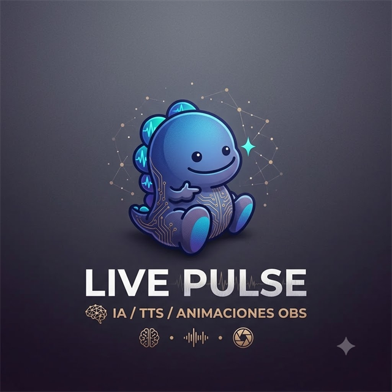
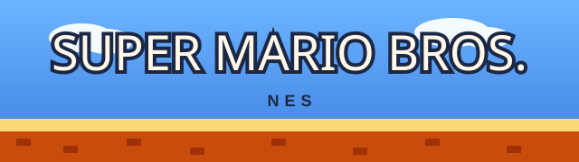
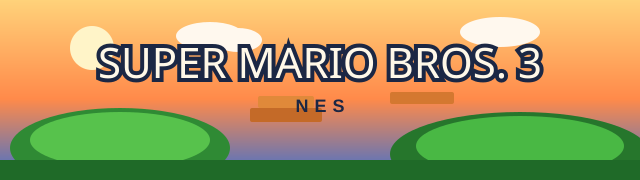

Windows 10 y 11
Windows
El asistente en la PC. Chat, regalos y canciones. Con OBS, el regalo muestra su animación y vuelve al video.
- Windows 10 u 11, 64 bits
- Microsoft Edge. Si no está, Google Chrome
- OBS Studio, si quieres animaciones en el live

Asistente para tu live
Asistente para tu live de BIGO. Lee el chat, agradece los regalos y pone la canción.
Si Windows muestra la pantalla azul por ser un software nuevo e independiente, haz clic en Más información y luego en Ejecutar de todas formas.
Versión 3.1.0. Windows, Android y el Mac anterior.
Windows 10 y 11
El asistente en la PC. Chat, regalos y canciones. Con OBS, el regalo muestra su animación y vuelve al video.
macOS
Chat, regalos y canciones. Este archivo es el de antes. La primera vez, clic derecho y Abrir.
Android
El mismo asistente en el teléfono. Chat, regalos y canciones.
Novedad en Windows. Un regalo del chat entra en la partida. Tú pones el juego.

Super Mario Bros.
Super Mario Bros. 3Windows, Mac y Android.
La portable no se instala. Crea la carpeta LivePulse-Data junto al archivo.
Mac Intel, o Apple Silicon con Rosetta. Hace falta Chrome, Edge, Brave o Chromium.
No está en Play Store. Si pregunta por la batería, déjala activa.
El ID de BIGO queda en tu cuenta 30 días. El mismo correo entra en Windows, Mac y teléfono.
Conectas el live. El asistente habla, agradece y pone la música.
Lee los comentarios en orden. Tú eliges la voz.
Agradece el regalo en voz alta. Puede sonar un efecto.
play y el título. Si ya suena una, la nueva espera.
Video base. El regalo muestra su animación y vuelve al video.
Chat, regalos y canciones. Las animaciones de OBS quedan en Windows.
10 días gratis. Luego 16 soles o 6 dólares, por 30 días.